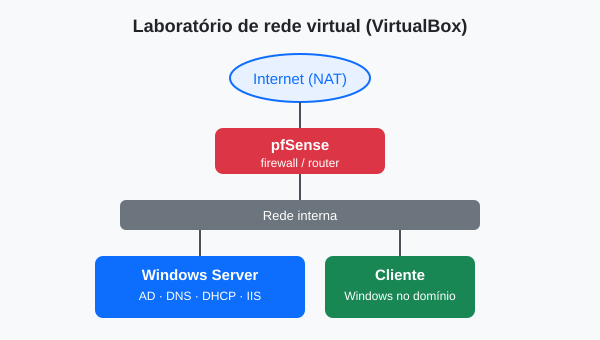
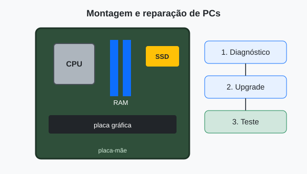
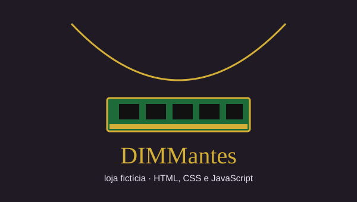
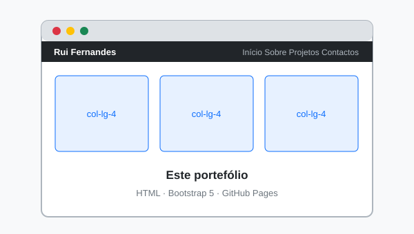

Projetos
Trabalho prático em hardware, redes e web.

Laboratório de rede virtual
Rede empresarial simulada num só PC, com firewall, servidor de domínio e cliente.
VirtualBox pfSense Windows Server
Montagem e reparação de PCs
Montagem de raiz, diagnóstico de avarias e upgrades de memória e discos.
Hardware Diagnóstico Windows
DIMMantes
Loja fictícia de joias feitas com módulos de RAM, criada para praticar programação web.
HTML CSS JavaScript
Este portefólio
Site de 4 páginas feito com HTML e Bootstrap 5, publicado no GitHub Pages.
HTML Bootstrap GitHubGaleria
Clique numa imagem para a ver em ponto grande.